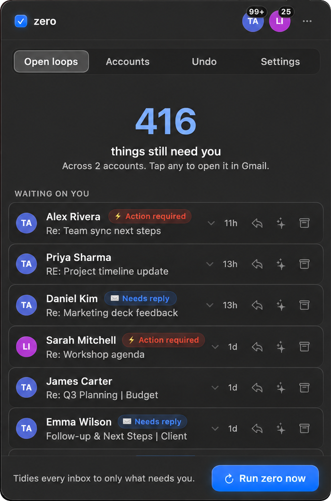

The day’s recovery label🗄️ Auto-Archived 2026-09-29
Format: Auto-Archived YYYY-MM-DD. One label per day.
zero is a Mac menu-bar app for Gmail. It keeps conversations that still need your attention and archives the rest. Archived mail stays in Gmail. You can put it back.
Apple Silicon MacmacOS 26 or laterGmail

Open loops Undo Run zero nowWhen zero sorts a conversation, it checks it against rules written in plain English. Edit them in Settings. If someone is waiting on you, or something needs action, it stays in your Inbox. The rest is archived.
It gets things wrong sometimes. Check your first few runs before you set a schedule.
These are zero’s default rules. This isn’t a live inbox, and it isn’t a promise. The AI can sort a message wrongly. In the app, mail that stays appears under Waiting on you in Open loops.
When zero archives a conversation, it removes Gmail’s Inbox label and adds a recovery label with that day’s date. The mail stays in All Mail, and search still finds it.
Format: Auto-Archived YYYY-MM-DD. One label per day.
Open the Undo tab in zero and choose Restore all for that day.
Search for the dated label, or look in All Mail. Archived messages remain in Gmail.
Edit the rules in Settings → Rules.
Read this first. zero isn’t notarized by Apple, and the installer may add developer tools to your Mac. Read the script before you run it.
curl -fsSL https://zero.headless.com/install | bashThe installer checks the download’s SHA-256 before it installs.